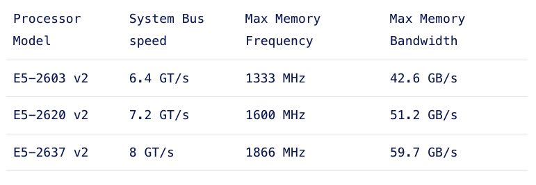
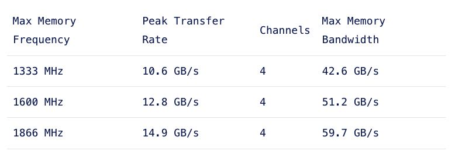
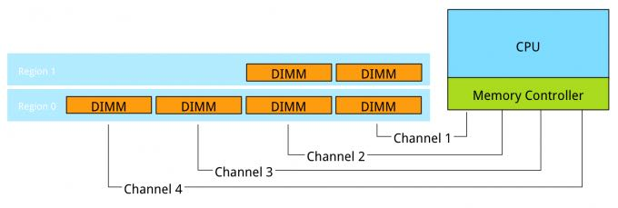

MEMORY DEEP DIVE: OPTIMIZING FOR PERFORMANCE
https://frankdenneman.nl/2015/02/20/memory-deep-dive/
这节主要讲如何优化内存性能（带宽和延迟）主要还是带宽，而且好多点在之前已经讲到了。
处理器内存架构，比如在NUMA架构下面QPI必须和Max Memory Bandwidth相当, 下面这几个处理器上基本上要保证channels都用满(channels = 4)，max memory bandwith才能跟上QPI.


The system bus speed is important when communicating over the quick path interconnect (QPI) to the other CPU local memory resources. This is a crucial part of the performance of systems with a Non-Uniform Memory Access (NUMA). NUMA will be covered in part 6. Maximum memory frequency and maximum memory bandwidth are closely connected to each other
每个Channel上的DIMM数量最好均衡，不然比如下图在访问Region1的时候就容易因为Channels数量不够导致出现带宽不足。Channel上可以作为interleaving, Ranks上也可以做到interleaving. 多个Ranks可以并行读取，dual ranking和quad ranking之间差别不大，但是single ranking DIMM则需要避免。

Interleaving is continued from interleaving across the channels to interleaving across the ranks in a channel. This only occurs when using dual or quad rank DIMMs. If a channel is populated with mixed ranking DIMMS and a single rank DIMM is present, rank interleaving will revert back to 1-way interleaving. 1-way rank interleaving results in storing bits in a single DRAM chip until it’s at capacity before moving to another DRAM chip. Rank interleaving provides performance benefits as it provides the memory controller to parallelize the memory request. Typically it results in a better improvement of latency. However the performance difference between dual ranking and quad ranking is minute and comes only into play when squeezing out the very last ounce of performance. Try to avoid single rank DIMMs.
另外就是之前提到的，DPC不能太高导致memory clock降低，进而导致带宽不足的情况。